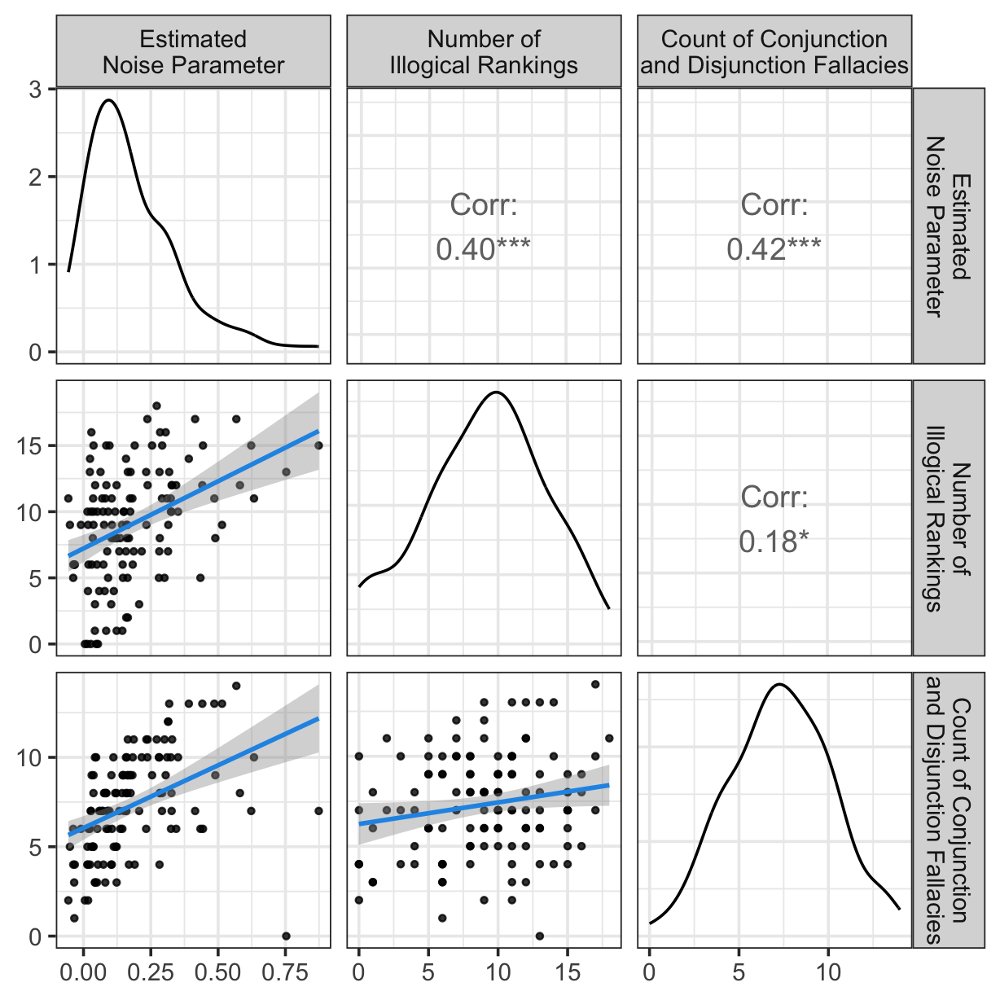

if (!requireNamespace("pacman", quietly = TRUE)) {
install.packages("pacman")
}
library("pacman")
p_load(tidyverse, here, GGally, ppcor, lme4)
## read-in data
#if the data cannot be read, try df_noise_conjdisj <- read.csv(here::here("data",
# "part2_estimation_task",
# "noise_conj_disj.csv"))
df_noise_conjdisj <- read.csv(here::here("data_and_analysis", "data",
"part2_estimation_task",
"noise_conj_disj.csv"))
#155 participants
df_ranking <- read.csv(here::here("data_and_analysis", "data",
"part3_ranking_task",
"result_ranking.csv")) |>
filter(id %in% df_noise_conjdisj$id) #143 participants
df_OSPAN <- read.csv(here::here("data_and_analysis", "data",
"part4_WMC_Gf",
"df_part4_OSPAN.csv")) |>
filter(id %in% df_ranking$id) #87 participants
df_SSPAN <- read.csv(here::here("data_and_analysis", "data",
"part4_WMC_Gf",
"df_part4_SSPAN.csv")) |>
filter(id %in% df_ranking$id) #87 participants
#df_RSPAN <- read.csv(here::here("data_and_analysis", "data",
# "part4_WMC_Gf",
# "df_part4_RSPAN.csv")) |>
# filter(id %in% df_ranking$id) #87 participants
###we decided to not use the RSPAN scores
df_HMT <- read.csv(here::here("data_and_analysis", "data",
"part4_WMC_Gf",
"df_HMT.csv")) |>
dplyr::select(id, HMT_score = no_correct) |>
dplyr::filter(id %in% df_ranking$id)
#creating a sub-directory for saving the plots
plots_dir <- file.path(getwd(), "plots")
if (!dir.exists(plots_dir)) dir.create(plots_dir, recursive = TRUE)Analysis
R preparation
Data exclusion ：
#part 2: excluding 2 participants who always responded 100\% or 90\%.
exclusion_noise <-read.csv(here::here("data_and_analysis", "data",
"part2_estimation_task",
"exclusion_part2_IDs.csv"
))
df_noise_conjdisj <- df_noise_conjdisj |>
filter(! id %in% exclusion_noise$id) #|> #153 participants
#filter(d_average >= 0 & d_average <= 0.5)
#part 3: excluding 8 (who translated German to English when performing the experiment)
# + 8(who failed the comprehension check question) = 16 participants
exclusion_ranking <- read.csv(here::here("data_and_analysis",
"data", "part3_ranking_task",
"exclusion_part3_IDs.csv"))
df_ranking <- df_ranking |> filter(! id %in% exclusion_ranking$id) |>
filter(id %in% df_noise_conjdisj$id) #125 participants
#part 4: excluding 2 participants, one was excluded for translating German to English when performing the experiment, another for starting the experiment mutiple times
exclusion_WMGf <- read.csv(here::here("data_and_analysis", "data",
"part4_WMC_Gf",
"exclusion_part4_IDs.csv"))
df_OSPAN <- df_OSPAN |> filter(! id %in% exclusion_WMGf$id)
df_SSPAN <- df_SSPAN |> filter(! id %in% exclusion_WMGf$id)
WMC_result <- df_OSPAN |>
full_join(df_SSPAN, by = c("id", "splength")) #85 participants
#excluding 9 participants, who did not meet the processing-task accuracy criterion (at least 85%) in both the operation and symmetry span322
WMC_result <- WMC_result |>
group_by(id) |>
fill(OSPAN_processing, SSPAN_processing, .direction = "updown") |>
mutate(OSPAN_pass = ifelse(OSPAN_processing >= 0.85, 1, 0),
SSPAN_pass = ifelse(SSPAN_processing >= 0.85, 1, 0)) |>
filter(OSPAN_pass == 1 & SSPAN_pass == 1 )
WMC_result <- WMC_result |>
filter(id %in% df_ranking$id) #69 participants
df_HMT <- df_HMT |>
filter(id %in% WMC_result$id) #69 participantsDemographic information:
data_demo <- read.csv(here::here("data_and_analysis",
"data", "part3_ranking_task",
"data_demo.csv"))
data_demo_RQ1 <- data_demo |>
filter(id %in% df_ranking$id)
data_demo_RQ1 |> group_by(gender) |> count()# A tibble: 3 × 2
# Groups: gender [3]
gender n
<chr> <int>
1 female 35
2 male 88
3 non-binary 2data_demo_RQ1 |>
summarise(
mean_age = mean(age),
sd_age = sd(age),
range_age = range(age)
)Warning: Returning more (or less) than 1 row per `summarise()` group was deprecated in
dplyr 1.1.0.
ℹ Please use `reframe()` instead.
ℹ When switching from `summarise()` to `reframe()`, remember that `reframe()`
always returns an ungrouped data frame and adjust accordingly. mean_age sd_age range_age
1 28.304 6.951704 19
2 28.304 6.951704 63data_demo_RQ2 <- data_demo |>
filter(id %in% df_HMT$id)
data_demo_RQ2 |> group_by(gender) |> count()# A tibble: 2 × 2
# Groups: gender [2]
gender n
<chr> <int>
1 female 16
2 male 53data_demo_RQ2 |>
summarise(
mean_age = mean(age),
sd_age = sd(age),
range_age = range(age)
)Warning: Returning more (or less) than 1 row per `summarise()` group was deprecated in
dplyr 1.1.0.
ℹ Please use `reframe()` instead.
ℹ When switching from `summarise()` to `reframe()`, remember that `reframe()`
always returns an ungrouped data frame and adjust accordingly. mean_age sd_age range_age
1 27.89855 7.853708 19
2 27.89855 7.853708 63Robustness check of the results:
To assess the robustness of the results, in addition to the analyses reported in the main text, we repeated the analyses under alternative exclusion criteria: We (1) repeated the analyses without excluding any participant in Part 2 (the estimation task) (by skipping the code df_noise_conjdisj <- df_noise_conjdisj |> filter(! id %in% exclusion_noise$id)), and (2) repeated the analyses further excluding those participants whose estimated noise parameters lie outside of the theoretical ranges ( by running the code df_noise_conjdisj <- df_noise_conjdisj |> filter(! id %in% exclusion_noise$id) |> filter(d_average >= 0 & d_average <= 0.5 instead). Across these specifications, the results were similar to the results reported in the main text and our substantive conclusions remained unchanged.
Research Question 1
Association between the estiamted noise, number of illogical rankings, and additionally the count of conjunction and disjunction fallacies
Visualization:
# prepare the dataset for the plot
df_ranking_aggregated <- df_ranking |>
group_by(id) |>
mutate(sum_illogical = sum(logical_pass)) |> #the number of trials where the responses were illogical
dplyr::select(id, sum_illogical, get_logic) |>
unique()
aggregated_noise_illogical <- df_ranking_aggregated |>
left_join(df_noise_conjdisj, by = "id") |>
drop_na() |>
dplyr::select(id,
d_average,
#number_conj,
#number_disj,
sum_illogical,
number_conj_disj,
get_logic) #125 participants #plot
custom_labels <- c(
"Estimated\nNoise Parameter",
"Number of\nIllogical Rankings",
"Count of Conjunction\nand Disjunction Fallacies"
)
lower_lm <- function(data, mapping,
se = TRUE, level = 0.95, linewidth = 1,
fullrange = TRUE) {
ggplot(data = data, mapping = mapping) +
geom_point(alpha = 0.8, size = 1) +
geom_smooth(method = "lm",
se = se, level = level,
linewidth = linewidth, fullrange = fullrange,
color = "#2297E6" )
}
( p1 <- ggpairs(
aggregated_noise_illogical,
columns = 2:4,
columnLabels = custom_labels,
upper = list(continuous = wrap("cor", size = 5, digits = 2)),
lower = list(continuous = wrap(lower_lm,
se = TRUE, level = 0.95, linewidth = 1)),
diag = list(continuous = "densityDiag")
) +
theme_bw(base_size = 14) ) `geom_smooth()` using formula = 'y ~ x'
`geom_smooth()` using formula = 'y ~ x'
`geom_smooth()` using formula = 'y ~ x'
#save the plot
ggsave(
filename = file.path(plots_dir, "noise_ranking_conjdisj.pdf"),
plot = p1,
width = 6.4, height = 6.4
)`geom_smooth()` using formula = 'y ~ x'
`geom_smooth()` using formula = 'y ~ x'
`geom_smooth()` using formula = 'y ~ x'Statistical modelling:
Pearson correlation between the estimate noise and the number of illogical rankings:
cor.test(aggregated_noise_illogical$d_average,
aggregated_noise_illogical$sum_illogical,
method = "pearson",
conf.level = 0.95)
Pearson's product-moment correlation
data: aggregated_noise_illogical$d_average and aggregated_noise_illogical$sum_illogical
t = 4.8919, df = 123, p-value = 3.059e-06
alternative hypothesis: true correlation is not equal to 0
95 percent confidence interval:
0.2453556 0.5408515
sample estimates:
cor
0.4035746 Pearson correlation between the estimated noise and the count of disjunction and conjunction fallacies:
cor.test(aggregated_noise_illogical$d_average,
aggregated_noise_illogical$number_conj_disj,
method = "pearson",
conf.level = 0.95)
Pearson's product-moment correlation
data: aggregated_noise_illogical$d_average and aggregated_noise_illogical$number_conj_disj
t = 5.1951, df = 123, p-value = 8.23e-07
alternative hypothesis: true correlation is not equal to 0
95 percent confidence interval:
0.2685949 0.5582192
sample estimates:
cor
0.4241944 Pearson correlation between the number of illogical rankings and the count of disjunction and conjunction fallacies:
cor.test(aggregated_noise_illogical$sum_illogical,
aggregated_noise_illogical$number_conj_disj,
method = "pearson",
conf.level = 0.95)
Pearson's product-moment correlation
data: aggregated_noise_illogical$sum_illogical and aggregated_noise_illogical$number_conj_disj
t = 2.0598, df = 123, p-value = 0.04153
alternative hypothesis: true correlation is not equal to 0
95 percent confidence interval:
0.007227642 0.347081225
sample estimates:
cor
0.1826034 Partial correlation between the estimated noise parameter and the number of illogical rankings, controlling for the count of conjunction and disjunction fallacies:
pc <- pcor.test(aggregated_noise_illogical[,"d_average"], aggregated_noise_illogical[,"sum_illogical"], aggregated_noise_illogical[,"number_conj_disj"], method = "pearson")
pc estimate p.value statistic n gp Method
1 0.3662794 2.867343e-05 4.347842 125 1 pearson95% confidence interval:
r <- as.numeric(pc$estimate)
n <- pc$n
k <- pc$gp # number of control vars
se <- 1 / sqrt(n - k - 3) # Fisher z SE
z <- atanh(r)
zcrit <- qnorm(0.975)
ci <- tanh(c(z - zcrit*se, z + zcrit*se))
ci[1] 0.2030778 0.5096803Partial correlation between the number of illogical rankings and the count of conjunction and disjunction fallacies, controlling for the estimated noise parameter
pc2 <- pcor.test(aggregated_noise_illogical[,"number_conj_disj"], aggregated_noise_illogical[,"sum_illogical"],
aggregated_noise_illogical[,"d_average"], method = "pearson")
pc2 estimate p.value statistic n gp Method
1 0.01377026 0.8793499 0.1521119 125 1 pearson95% confidence interval:
r2 <- as.numeric(pc2$estimate)
n2 <- pc2$n
k2 <- pc2$gp # number of control vars
se2 <- 1 / sqrt(n2 - k2 - 3) # Fisher z SE
z2 <- atanh(r2)
zcrit2 <- qnorm(0.975)
ci2 <- tanh(c(z2 - zcrit2*se2, z2 + zcrit2*se2))
ci2[1] -0.1629420 0.1896265GLMM (logit link function; family: binomial) predicting the probability of logical rankings with predictors: event-set type, the estimated noise parameter (the interaction between the event-set type and the estimated noise parameter, the trial number, as well as the logic rule question)
#prepare the dataset for GLMMs
noise_illogical_by_trials <- df_ranking |>
left_join(df_noise_conjdisj, by = "id") |>
dplyr::select(id, f00, condition, logical_pass,
d_average, number_conj_disj, get_logic) #125 participants predictors: noise, event-set type
str(noise_illogical_by_trials)'data.frame': 3000 obs. of 7 variables:
$ id : chr "ID_XGS73O0XJA" "ID_XGS73O0XJA" "ID_XGS73O0XJA" "ID_XGS73O0XJA" ...
$ f00 : int 1 2 3 4 5 6 7 8 9 10 ...
$ condition : chr "edge" "middle" "edge" "middle" ...
$ logical_pass : int 0 1 0 0 0 1 0 0 0 0 ...
$ d_average : num 0.159 0.159 0.159 0.159 0.159 ...
$ number_conj_disj: int 7 7 7 7 7 7 7 7 7 7 ...
$ get_logic : logi FALSE FALSE FALSE FALSE FALSE FALSE ...options(contrasts = c("contr.treatment", "contr.poly"))
glmm_condition_noise <- glmer(logical_pass ~ condition + d_average +
(1 + condition|id),
data = noise_illogical_by_trials,
family = binomial(link = "logit"))
summary(glmm_condition_noise)Generalized linear mixed model fit by maximum likelihood (Laplace
Approximation) [glmerMod]
Family: binomial ( logit )
Formula: logical_pass ~ condition + d_average + (1 + condition | id)
Data: noise_illogical_by_trials
AIC BIC logLik -2*log(L) df.resid
3523.9 3560.0 -1756.0 3511.9 2994
Scaled residuals:
Min 1Q Median 3Q Max
-2.0875 -0.6452 -0.4082 0.7713 2.8797
Random effects:
Groups Name Variance Std.Dev. Corr
id (Intercept) 0.4125 0.6422
conditionmiddle 0.3549 0.5957 0.13
Number of obs: 3000, groups: id, 125
Fixed effects:
Estimate Std. Error z value Pr(>|z|)
(Intercept) -1.6960 0.1268 -13.375 < 2e-16 ***
conditionmiddle 1.3496 0.1045 12.912 < 2e-16 ***
d_average 2.2298 0.4508 4.946 7.59e-07 ***
---
Signif. codes: 0 '***' 0.001 '**' 0.01 '*' 0.05 '.' 0.1 ' ' 1
Correlation of Fixed Effects:
(Intr) cndtnm
conditnmddl -0.379
d_average -0.706 0.071predictors: noise, event-set type, and their interactions
options(contrasts = c("contr.treatment", "contr.poly"))
glmm_condition_noise_interaction <- glmer(logical_pass ~ condition + d_average +
condition*d_average +
(1 + condition|id),
data = noise_illogical_by_trials,
family = binomial(link = "logit"))
summary(glmm_condition_noise_interaction)Generalized linear mixed model fit by maximum likelihood (Laplace
Approximation) [glmerMod]
Family: binomial ( logit )
Formula: logical_pass ~ condition + d_average + condition * d_average +
(1 + condition | id)
Data: noise_illogical_by_trials
AIC BIC logLik -2*log(L) df.resid
3525.9 3568.0 -1756.0 3511.9 2993
Scaled residuals:
Min 1Q Median 3Q Max
-2.0816 -0.6465 -0.4068 0.7710 2.8849
Random effects:
Groups Name Variance Std.Dev. Corr
id (Intercept) 0.4146 0.6439
conditionmiddle 0.3537 0.5948 0.12
Number of obs: 3000, groups: id, 125
Fixed effects:
Estimate Std. Error z value Pr(>|z|)
(Intercept) -1.7027 0.1347 -12.637 < 2e-16 ***
conditionmiddle 1.3670 0.1558 8.775 < 2e-16 ***
d_average 2.2586 0.4915 4.596 4.31e-06 ***
conditionmiddle:d_average -0.0880 0.5879 -0.150 0.881
---
Signif. codes: 0 '***' 0.001 '**' 0.01 '*' 0.05 '.' 0.1 ' ' 1
Correlation of Fixed Effects:
(Intr) cndtnm d_avrg
conditnmddl -0.486
d_average -0.743 0.339
cndtnmddl:_ 0.330 -0.742 -0.395predictors: noise, event-set type, f00(number of trials), if participants answered logic question correct or not (get_logical = 1, if the participant answered the question correctly)
options(contrasts = c("contr.treatment", "contr.poly"))
glmm_condition_noise_logicQ_f00 <- glmer(logical_pass ~ condition + d_average +
get_logic + f00 +
(1 + condition |id),
data = noise_illogical_by_trials,
family = binomial(link = "logit"))
summary(glmm_condition_noise_logicQ_f00)Generalized linear mixed model fit by maximum likelihood (Laplace
Approximation) [glmerMod]
Family: binomial ( logit )
Formula: logical_pass ~ condition + d_average + get_logic + f00 + (1 +
condition | id)
Data: noise_illogical_by_trials
AIC BIC logLik -2*log(L) df.resid
3506.1 3554.1 -1745.0 3490.1 2992
Scaled residuals:
Min 1Q Median 3Q Max
-2.1579 -0.6501 -0.4109 0.7729 3.2606
Random effects:
Groups Name Variance Std.Dev. Corr
id (Intercept) 0.3396 0.5828
conditionmiddle 0.3499 0.5915 0.20
Number of obs: 3000, groups: id, 125
Fixed effects:
Estimate Std. Error z value Pr(>|z|)
(Intercept) -1.246731 0.151231 -8.244 < 2e-16 ***
conditionmiddle 1.354382 0.104200 12.998 < 2e-16 ***
d_average 1.844531 0.443806 4.156 3.24e-05 ***
get_logicTRUE -0.681020 0.203274 -3.350 0.000807 ***
f00 -0.019114 0.005785 -3.304 0.000954 ***
---
Signif. codes: 0 '***' 0.001 '**' 0.01 '*' 0.05 '.' 0.1 ' ' 1
Correlation of Fixed Effects:
(Intr) cndtnm d_avrg g_TRUE
conditnmddl -0.270
d_average -0.635 0.062
get_lgcTRUE -0.361 -0.040 0.232
f00 -0.473 -0.040 -0.004 0.008Research Question 2
Can noise predict illogical rankings independently of working memory capacity (WMC) and fluid intelligence (Gf)?
Visualization:
#prepare the dataset for the plot
WMC_HMT <- WMC_result |>
group_by(id) |>
mutate(OSPAN_total = sum(OSPAN_partial_credit, na.rm = TRUE),
SSPAN_total = sum(SSPAN_partial_credit, na.rm = TRUE)) |>
dplyr::select(id, OSPAN_total, SSPAN_total) |>
unique() |>
mutate(WMC_composite = OSPAN_total + SSPAN_total) |>
left_join(df_HMT, by = "id")
noise_illogical_WMC_Gf_aggregated <- aggregated_noise_illogical |>
left_join(WMC_HMT , by = "id") |>
dplyr::select(id, d_average, WMC_composite, HMT_score, sum_illogical, get_logic, number_conj_disj) |>
drop_na() #69 participants #plot
custom_labels_noise_illogical_WMC <- c(
"Estimated\nNoise Parameter",
"WMC",
"Gf",
"Number of\nIllogical Rankings"
# "Number of Conjunction\nand Disjunction Errors"
)
( p2 <- ggpairs(
noise_illogical_WMC_Gf_aggregated, columns = 2:5,
columnLabels = custom_labels_noise_illogical_WMC,
upper = list(continuous = wrap("cor", size = 4, digits = 2)),
lower = list(continuous = wrap(lower_lm, se = TRUE, level = 0.95, linewidth = 1)),
diag = list(continuous = "densityDiag")
) +
theme_bw(base_size = 14) )`geom_smooth()` using formula = 'y ~ x'
`geom_smooth()` using formula = 'y ~ x'
`geom_smooth()` using formula = 'y ~ x'
`geom_smooth()` using formula = 'y ~ x'
`geom_smooth()` using formula = 'y ~ x'
`geom_smooth()` using formula = 'y ~ x'
#save the plot
ggsave(
filename = file.path(plots_dir, "noise_illogical_Gf_WMC.pdf"),
plot = p2,
width = 7, height = 7
)`geom_smooth()` using formula = 'y ~ x'
`geom_smooth()` using formula = 'y ~ x'
`geom_smooth()` using formula = 'y ~ x'
`geom_smooth()` using formula = 'y ~ x'
`geom_smooth()` using formula = 'y ~ x'
`geom_smooth()` using formula = 'y ~ x'Pearson correlation between the number of illogical rankings and Gf score(HMT_score; the score for the HMT task)
cor.test(noise_illogical_WMC_Gf_aggregated$HMT_score, noise_illogical_WMC_Gf_aggregated$sum_illogical,
method = "pearson",
conf.level = 0.95)
Pearson's product-moment correlation
data: noise_illogical_WMC_Gf_aggregated$HMT_score and noise_illogical_WMC_Gf_aggregated$sum_illogical
t = -3.2649, df = 67, p-value = 0.001727
alternative hypothesis: true correlation is not equal to 0
95 percent confidence interval:
-0.5582172 -0.1466645
sample estimates:
cor
-0.3704847 Pearson correlation between the number of illogical rankings and WMC score
cor.test(noise_illogical_WMC_Gf_aggregated$WMC_composite, noise_illogical_WMC_Gf_aggregated$sum_illogical,
method = "pearson",
conf.level = 0.95)
Pearson's product-moment correlation
data: noise_illogical_WMC_Gf_aggregated$WMC_composite and noise_illogical_WMC_Gf_aggregated$sum_illogical
t = -1.4338, df = 67, p-value = 0.1563
alternative hypothesis: true correlation is not equal to 0
95 percent confidence interval:
-0.39316708 0.06686914
sample estimates:
cor
-0.1725423 Pearson correlation between the estimated noise parameter and WMC score
cor.test(noise_illogical_WMC_Gf_aggregated$d_average, noise_illogical_WMC_Gf_aggregated$WMC_composite,
method = "pearson",
conf.level = 0.95)
Pearson's product-moment correlation
data: noise_illogical_WMC_Gf_aggregated$d_average and noise_illogical_WMC_Gf_aggregated$WMC_composite
t = 0.88032, df = 67, p-value = 0.3818
alternative hypothesis: true correlation is not equal to 0
95 percent confidence interval:
-0.1331183 0.3351304
sample estimates:
cor
0.1069314 Pearson correlation between the estimated noise parameter and Gf score
cor.test(noise_illogical_WMC_Gf_aggregated$d_average, noise_illogical_WMC_Gf_aggregated$HMT_score,
method = "pearson",
conf.level = 0.95)
Pearson's product-moment correlation
data: noise_illogical_WMC_Gf_aggregated$d_average and noise_illogical_WMC_Gf_aggregated$HMT_score
t = -0.91664, df = 67, p-value = 0.3626
alternative hypothesis: true correlation is not equal to 0
95 percent confidence interval:
-0.3390402 0.1287829
sample estimates:
cor
-0.1112899 GLMM (logit link function; family: binomial) predicting the probability of logical rankings with predictors: event-set type, the estimated noise parameter, WMC score and Gf score.
#prepare the dataset for GLMMs
noise_illogical_HMT_WMC_trials <- df_ranking |>
dplyr::select(id, f00, condition, logical_pass, get_logic) |>
left_join(WMC_HMT, by = "id") |>
left_join(df_noise_conjdisj, by = "id") |>
dplyr::select(id, f00, condition, logical_pass, get_logic, WMC_composite, HMT_score, d_average) |>
drop_na() #69 participants predictors: event-set type (condition), noise (d_average), WMC score (WMC_composite), Gf score (HMT_score)
glmm_condtion_noise_WMC_Gf <- glmer(logical_pass ~ condition + d_average +
WMC_composite + HMT_score +
(1 + condition |id),
data = noise_illogical_HMT_WMC_trials,
family = binomial(link = "logit"),
control = glmerControl(optimizer="bobyqa",
optCtrl=list(maxfun=1e5)))
summary(glmm_condtion_noise_WMC_Gf)Generalized linear mixed model fit by maximum likelihood (Laplace
Approximation) [glmerMod]
Family: binomial ( logit )
Formula: logical_pass ~ condition + d_average + WMC_composite + HMT_score +
(1 + condition | id)
Data: noise_illogical_HMT_WMC_trials
Control: glmerControl(optimizer = "bobyqa", optCtrl = list(maxfun = 1e+05))
AIC BIC logLik -2*log(L) df.resid
1914.9 1958.2 -949.5 1898.9 1648
Scaled residuals:
Min 1Q Median 3Q Max
-2.0414 -0.6423 -0.4068 0.7540 3.0866
Random effects:
Groups Name Variance Std.Dev. Corr
id (Intercept) 0.3410 0.5839
conditionmiddle 0.4534 0.6734 0.18
Number of obs: 1656, groups: id, 69
Fixed effects:
Estimate Std. Error z value Pr(>|z|)
(Intercept) -0.281435 0.493933 -0.570 0.568824
conditionmiddle 1.344945 0.147037 9.147 < 2e-16 ***
d_average 2.017319 0.560162 3.601 0.000317 ***
WMC_composite -0.008036 0.009851 -0.816 0.414675
HMT_score -0.218329 0.088645 -2.463 0.013779 *
---
Signif. codes: 0 '***' 0.001 '**' 0.01 '*' 0.05 '.' 0.1 ' ' 1
Correlation of Fixed Effects:
(Intr) cndtnm d_avrg WMC_cm
conditnmddl -0.057
d_average -0.181 0.056
WMC_compost -0.568 -0.011 -0.164
HMT_score -0.443 -0.062 0.140 -0.425Predictors: event-set type (condition), noise (d_average), WMC score (WMC_composite), Gf score (HMT_score), interaction between condition and WMC score, interaction between condition and Gf score
glmm_condtion_noise_WMC_Gf_interactions <- glmer(logical_pass ~ condition + d_average +
WMC_composite + HMT_score +
condition*d_average + condition*HMT_score + condition*WMC_composite +
(1 + condition |id),
data = noise_illogical_HMT_WMC_trials,
family = binomial(link = "logit"),
control = glmerControl(optimizer="bobyqa",
optCtrl=list(maxfun=1e5)))
summary(glmm_condtion_noise_WMC_Gf_interactions)Generalized linear mixed model fit by maximum likelihood (Laplace
Approximation) [glmerMod]
Family: binomial ( logit )
Formula: logical_pass ~ condition + d_average + WMC_composite + HMT_score +
condition * d_average + condition * HMT_score + condition *
WMC_composite + (1 + condition | id)
Data: noise_illogical_HMT_WMC_trials
Control: glmerControl(optimizer = "bobyqa", optCtrl = list(maxfun = 1e+05))
AIC BIC logLik -2*log(L) df.resid
1920.4 1980.0 -949.2 1898.4 1645
Scaled residuals:
Min 1Q Median 3Q Max
-2.0401 -0.6390 -0.4085 0.7581 3.0426
Random effects:
Groups Name Variance Std.Dev. Corr
id (Intercept) 0.3397 0.5828
conditionmiddle 0.4477 0.6691 0.19
Number of obs: 1656, groups: id, 69
Fixed effects:
Estimate Std. Error z value Pr(>|z|)
(Intercept) -0.373546 0.530321 -0.704 0.481198
conditionmiddle 1.668842 0.688945 2.422 0.015422 *
d_average 2.104858 0.601070 3.502 0.000462 ***
WMC_composite -0.008528 0.010663 -0.800 0.423838
HMT_score -0.196672 0.096496 -2.038 0.041537 *
conditionmiddle:d_average -0.338456 0.782779 -0.432 0.665467
conditionmiddle:HMT_score -0.072280 0.123528 -0.585 0.558460
conditionmiddle:WMC_composite 0.001546 0.013735 0.113 0.910377
---
Signif. codes: 0 '***' 0.001 '**' 0.01 '*' 0.05 '.' 0.1 ' ' 1
Correlation of Fixed Effects:
(Intr) cndtnm d_avrg WMC_cm HMT_sc cndt:_ c:HMT_
conditnmddl -0.366
d_average -0.177 0.064
WMC_compost -0.565 0.207 -0.161
HMT_score -0.443 0.164 0.122 -0.431
cndtnmddl:_ 0.064 -0.168 -0.364 0.057 -0.029
cndtnm:HMT_ 0.166 -0.450 -0.030 0.172 -0.400 0.130
cndtnm:WMC_ 0.209 -0.570 0.057 -0.381 0.172 -0.167 -0.424Z-transform continuous predictors for the ease of interpretation:
#prepare the dataset:
WMC_mean <- mean(WMC_HMT$WMC_composite) #48.33333
WMC_sd <- sd(WMC_HMT$WMC_composite) #11.36774
hmt_mean <- mean(WMC_HMT$HMT_score) #4.710145
hmt_sd <- sd(WMC_HMT$HMT_score) #1.28454
WMC_HMT_z <- WMC_HMT |>
mutate(WMC_z = (WMC_composite - WMC_mean) / WMC_sd,
HMT_z = (HMT_score - hmt_mean) / hmt_sd)
df_noise_conjdisj_z <- df_noise_conjdisj |>
filter(id %in% WMC_HMT_z$id)
noise_mean <- mean(df_noise_conjdisj_z$d_average)
noise_sd <- sd(df_noise_conjdisj_z$d_average)
df_noise_conjdisj_z <- df_noise_conjdisj_z |>
mutate(noise_z = (d_average - noise_mean)/noise_sd)
noise_illogical_HMT_WMC_trials_z <- df_ranking |>
left_join(WMC_HMT_z , by = "id") |>
left_join(df_noise_conjdisj_z, by = "id") |>
dplyr::select(id, f00, condition, logical_pass, number_conj_disj,
noise_z, WMC_z , HMT_z, get_logic) |>
drop_na()
#GLMM:
glmm_z_condition_noise_WMC_Gf <- glmer(logical_pass ~ condition + noise_z +
WMC_z + HMT_z +
(1 + condition |id),
data = noise_illogical_HMT_WMC_trials_z,
family = binomial(link = "logit"),
control = glmerControl(optimizer="bobyqa",
optCtrl=list(maxfun=1e5)))
summary(glmm_z_condition_noise_WMC_Gf)Generalized linear mixed model fit by maximum likelihood (Laplace
Approximation) [glmerMod]
Family: binomial ( logit )
Formula: logical_pass ~ condition + noise_z + WMC_z + HMT_z + (1 + condition |
id)
Data: noise_illogical_HMT_WMC_trials_z
Control: glmerControl(optimizer = "bobyqa", optCtrl = list(maxfun = 1e+05))
AIC BIC logLik -2*log(L) df.resid
1914.9 1958.2 -949.5 1898.9 1648
Scaled residuals:
Min 1Q Median 3Q Max
-2.0414 -0.6423 -0.4068 0.7540 3.0866
Random effects:
Groups Name Variance Std.Dev. Corr
id (Intercept) 0.3410 0.5839
conditionmiddle 0.4534 0.6734 0.18
Number of obs: 1656, groups: id, 69
Fixed effects:
Estimate Std. Error z value Pr(>|z|)
(Intercept) -1.33748 0.11798 -11.336 < 2e-16 ***
conditionmiddle 1.34495 0.14704 9.147 < 2e-16 ***
noise_z 0.36818 0.10224 3.601 0.000317 ***
WMC_z -0.09134 0.11199 -0.816 0.414686
HMT_z -0.28045 0.11387 -2.463 0.013780 *
---
Signif. codes: 0 '***' 0.001 '**' 0.01 '*' 0.05 '.' 0.1 ' ' 1
Correlation of Fixed Effects:
(Intr) cndtnm nois_z WMC_z
conditnmddl -0.455
noise_z -0.076 0.056
WMC_z 0.013 -0.011 -0.164
HMT_z 0.084 -0.062 0.140 -0.425Predictor coefficients:
round(coef(summary(glmm_z_condition_noise_WMC_Gf)),2) Estimate Std. Error z value Pr(>|z|)
(Intercept) -1.34 0.12 -11.34 0.00
conditionmiddle 1.34 0.15 9.15 0.00
noise_z 0.37 0.10 3.60 0.00
WMC_z -0.09 0.11 -0.82 0.41
HMT_z -0.28 0.11 -2.46 0.01Odds ratios (OR) of predictors:
coefs_z <- fixef(glmm_z_condition_noise_WMC_Gf)
ses_z <- coef(summary(glmm_z_condition_noise_WMC_Gf))[, "Std. Error"]
zval <- 1.96 # for 95% CI
lower_z <- coefs_z - zval * ses_z
upper_z <- coefs_z + zval * ses_z
or_table_z <- round(cbind(OR = exp(coefs_z), Lower = exp(lower_z), Upper = exp(upper_z)), 2)
or_table_z OR Lower Upper
(Intercept) 0.26 0.21 0.33
conditionmiddle 3.84 2.88 5.12
noise_z 1.45 1.18 1.77
WMC_z 0.91 0.73 1.14
HMT_z 0.76 0.60 0.94